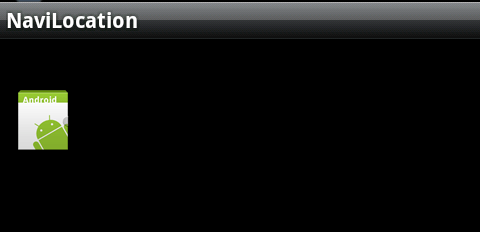

剖析Android动画(图片闪烁、左右摇摆、上下晃动等效果)
图片闪烁，类似这样。
左右摇摆：

一、续播 (不知道取什么名字好，就是先播放动画A， 接着播放动画B)
有两种方式。
第一种，分别动画两个动画，A和B，然后先播放动画A，设置A的AnimationListener。当onAnimationEnd触发（即A播放完毕）时，开始播放B。
animation1.setAnimationListener(new Animation.AnimationListener() { @Override
public void onAnimationStart(Animation animation) {
}
@Override
public void onAnimationRepeat(Animation animation) {
}
@Override
public void onAnimationEnd(Animation animation) {
animation2.start();
}
);
}
第二种，写一个动画集AnimationSet，在其中定义动画A和B，为动画B设置startOffset， 其值就是前一个动画播放的所需的时间。
这边举一个例子，动画A是 透明度从 0.1 到 1.0 ， 动画B是透明度从1.0到0.1, 使用下面这个动画集你就可以看到整个变化过程。
<?xml version="1.0" encoding="utf-8"?><set xmlns:android="http://schemas.android.com/apk/res/android" >
<alpha
android:duration="3000
android:fromAlpha="0.2
android:toAlpha="1.0" />
<alpha
android:duration="3000
android:fromAlpha="1.0
android:startOffset="3000
android:toAlpha="0.2" />
</set>
其中android:startOffset="3000" 表示延迟3秒后再执行。 如果去掉其中的 android:startOffset="3000" ， 你就什么效果也看不到了。 因为两个动画会同时播放。
二、循环
有时候，我们可能需要实现一个图片不停闪烁的功能（比如天气预报中的紧急警报功能），或者有的时候我们需要实现图片左右晃动，都需要循环动画来实现。
同样，也有两种办法。
第一种，设置两个动画A 和 B， 动画A 是透明度 0 -1， 动画B是1 - 0， 然后对这两个动画都进行监听， A 结束执行B， B结束执行A.. 无限循环...
第二种，利用Animation的setRepeatCount、setRepeatMode来实现动画循环。
比如闪烁（透明度亮 -> 暗， 暗->亮，如此循环）
//闪烁AlphaAnimation alphaAnimation1 = new AlphaAnimation(0.1f, 1.0f);
alphaAnimation1.setDuration(3000);
alphaAnimation1.setRepeatCount(Animation.INFINITE);
alphaAnimation1.setRepeatMode(Animation.REVERSE);
iv.setAnimation(alphaAnimation1);
alphaAnimation1.start();
alphaAnimation1.setRepeatCount(Animation.INFINITE); 表示重复多次。 也可以设定具体重复的次数，比如alphaAnimation1.setRepeatCount(5);
alphaAnimation1.setRepeatMode(Animation.REVERSE);表示动画结束后，反过来再执行。 该方法有两种值， RESTART 和 REVERSE。 RESTART表示从头开始，REVERSE表示从末尾倒播。
再比如左右摇摆
//摇摆TranslateAnimation alphaAnimation2 = new TranslateAnimation(150f, 350f, 50, 50);
alphaAnimation2.setDuration(1000);
alphaAnimation2.setRepeatCount(Animation.INFINITE);
alphaAnimation2.setRepeatMode(Animation.REVERSE);
iv.setAnimation(alphaAnimation2);
alphaAnimation2.start();
其中 iv 是一个ImageView。